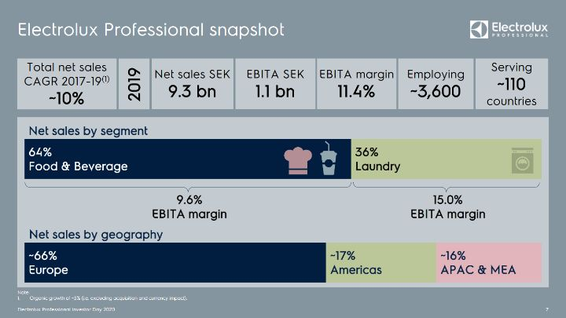
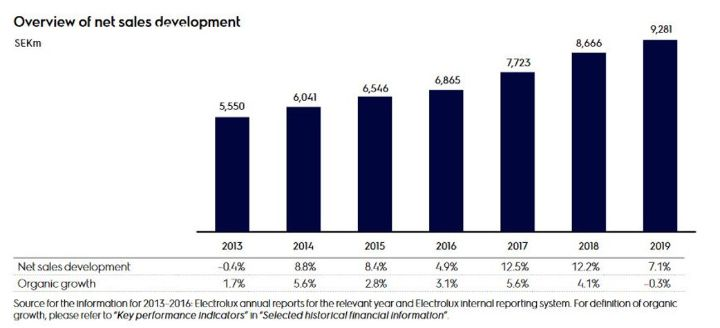
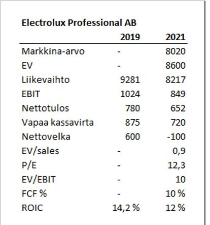
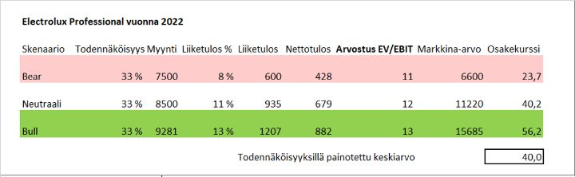
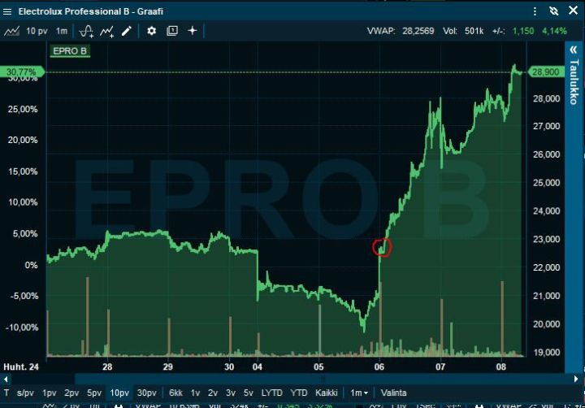

Electrolux Professional – koronapommi vai edullinen laatuyhtiö?
Yhteenveto
Nykyisin laadukkaista ja koronan kestävistä yhtiöistä joutuu maksamaan todella paljon. Sen sijaan, jos löytää yhtiön, johon koronan pitkänajan vaikutuksia yliarvioidaan, voi suhteellisen hyvää yritystä päästä ostamaan alennuksella. Ammattilaislaitteita juomiin&ruokiin ja pyykkäykseen valmistava Electrolux Professional on toki laadukas yhtiö, muttei aivan pörssin huippua. Siitä ei siis kannata maksaa myöskään huippuyhtiöiden hintakertoimia. Silti tällä hetkellä osake on suhteellisen edullinen.
Vaikka ravintoloilla tulee olemaan vaikeata, en osta ajatusta, että pitemmällä tähtäimellä ihmisten ravintoloissa syöminen tai tilaaminen vähenee merkittävästi. Moni ravintola siis kaatuu ja moni perustetaan. Tämä ei välttämättä ole pelkästään huono asia ammattilaitteiden tilaukselle. Lisäksi vaikka vakaampi pyykkipuoli on vain 35% liikevaihdosta, sen arvo etenkin tällä hetkellä on vähintään puolet yhtiöstä paremman kannattavuuden ja vakautensa takia.
Nykyisillä tiedoilla Electrolux Professional arvo on omalla pessimistisellä talousarviolla 30-40 SEK, kun viimeisin kurssi 28 SEK. Kun talous normalisoituu, toki voimme nähdä paljon korkeampiakin arvoja. Ilman koronavirusta yhtiön osake olisi luultavasti yli 45 SEK (yksi pankki veikkasi lähes 60 SEK), joten se voisi olla realistinen tavoite 2-3 vuoden aikajänteellä. Yhtiö on suhteellisen laadukas ja sillä on vähän velkaa. Riskit liiketoiminnassa Etelä-Euroopassa sekä hotelli- ja ravintola-ala 50% asiakaskunnasta on pitänyt osakkeen alhaalla Electroluxista jakautumisen jälkeen. Nykyisellä 28 SEK hinnalla osake vaikuttaa ihan hyvältä lisältä salkkuun, mutta ei enää samanlainen erikoistarjous, kun omien ostojemme keskihinta 22,7 kaksi päivää aiemmin. Harmillisesti kirjoitus ei kerennyt parhaisiin aleisiin, mutta onneksi osakekursseilla on taipumusta heilua. Jos pelko koronan toisesta aallosta tai Italia euroerosta nousee tapetille, voi osake painua vielä lähemmäksi 20 SEK.
Alustus
Yritysten jakaantumiset (spin-off) tarjoavat mielenkiintoisia sijoitusmahdollisuuksia. Etenkin irrotettavassa yhtiössä voi olla alkuun myyntipainetta. Yhtiö on jakautumisen jälkeen paremmin parrasvaloissa, ja johto usein paremmin motivoitunut ja palkittu.
Ensimmäisen oikeasti ison osakepositioni otin vuonna 2014, kun Metso erotti Valmetin itsestään. Valmetin markkina-arvoksi reilulla kuudella eurolla jäi alle miljardi euroa. Jos Metson osuus salkusta oli ollut 4 % ennen spin-offia, Valmetin osuudeksi jäi prosentin jämäerä. Niin pienellä omistuksellahan ei paljon ole väliä enää?
Siispä Valmetia myytiin aika hinnasta välittämättä aina kuuteen euroon asti. Tämä on usein spinnattujen osakkeiden kohtalo. Tulla alkuun hyljätyksi, alianalysoiduksi ja liian halvaksi. Valmet oli myös paras osakkeeni vuonna 2014.
Samasta syystä spinnattuja yhtiöitä jo mekaanisesti ostamalla on tutkimusten mukaan saanut ylituottoa. Ennen vuosisadan vaihdetta todella ruhtinaallisesti, viimeisen 10 vuoden aikana ylituotto on joidenkin tutkimusten perusteella hävinnyt. Markkinat ovat tässäkin suhteessa tehostuneet. Silti uskomme, että jyvät akanoista erottelemalla voi päästä hyviin lopputuloksiin.
Electrolux Professional lyhyesti
Electrolux on kaikille tuttu brändi kodinkoneista, mutta mikä on Electrolux Professional? Paljon vähemmän tuttu brändi muille kuin ravintola- ja pesualan ammattilaisille, joka jakautui Electroluxista 23.3.2020. Koska nimi on niin pitkä, käytän siitä tuttavallisesti kaupankäyntitunnus EPRO:a lempinimenä.
Yhtiöllä on kaksi segmenttiä:
1. Ruoka ja juoma (65% liikevaihdosta, 10% EBITA kannattavuus)
Kaikki ravintolakeittiön tärkeimmät laitteet ruoan valmistukseen, kylmentämiseen ja astioidenpesuun. Juomapuolella kylmien ja kuumien juomien valmistus- ja säilytyslaitteet. Tämä puoli kärsii paljon koronasta, kun ravintolat leikkaavat investointeja rajusti. Ravintolapuolella kilpailukenttä hajautunut, mistä voi löytää kasvumahdollisuuksia.
2. Pyykki (35% liikevaihdosta, 15% EBITA kannattavuus)
Valtavia teollisia pyykinpesuakoneita ja vähän pienempiä itsepesukoneita kuivauslaitteineen. Segmentti sisältää myös silityspuolen tuotteet. Tässä segmentissä yhtiön asema ja kannattavuus on hyvin vahva ja se kestää hyvin erilaisia talousshokkeja.
Hotellit ja ravintolat edustavat noin 50% yhtiön liikevaihdosta. Yhtiön työntekijöistä 30% on Italiasta. Liikevaihdosta 2/3 tulee Euroopasta. Ei mikään täydellinen lähtökohta, mutta se näkyy hinnassa, ja jotain riskejä yliarvioitu. Electrolux myös pieneltä osin hyötyy koronasta, kun pyykkipuoli saanut lisätilauksia, kun laitokset ja sairaalat halutaan pitää puhtaina.

En mene kovin syvälle yhtiön toimintaan. On kuitenkin hyvä huomata, että ammattilaitteet eroavat huomattavasti kuluttajatuotteista. Luotettavuus ja energiatehokkuus entistä tärkeämpiä, joten pelkällä hinnalla ei kilpailla. Myös katteet ammattituotteissa ovat huomattavasti parempia kuin kuluttajapuolella. Tämä on yksinkertaisesti parempi bisnes kuin markettilaitteet.
Lisätietoa löytää esim. Investor day presiksestä.
Kilpailu
Ravintolapuolella yhtiö on top3 toimijoita Euroopassa. Pyykkipuolella taas Top2 toimija Globaalisti. Yhtiöllä on siis etenkin pyykkipuolella vahva markkina-asema, mutta ravintolapuolella etenkin maailmanlaajuisesti pitäisi löytää tapoja vahvistaa asemia.
Kilpailukenttä on hajanainen. Listattujen kilpailijoiden Welbilt, Middleby ja Rational AG osakekurssit ovat olleet myös paineessa ja arvostukset alhaiset. Oli kuitenkin yllättävää, että EPRO hinnoitellaan edelleen näitä edullisemmin (Rationalilla tosin on omassa toiminnassaan kilpailuetu ja korkeampi arvostus perusteltu). Moni ruotsalainen teollisuusyritys on toteuttanut viime vuodet onnistuneesti pienillä, mutta lukuisilla yritysostoilla kasvamista. Näen, että Electroluxilla on tilaisuus luoda omistaja-arvoa yritysostoin.
Kasvaako yhtiö?
Olisin väärin luokitella EPRO kasvuyhtiöksi. Liikevaihdon kasvu on ollut viimeiset seitsemän vuotta 7,6% ja orgaaninen kasvu 3,2%. Orgaaninen kasvu on ollut siis hieman kohdemarkkinoiden painotettua nominaalista kasvua korkeampi.

Aiempi suoriutuminen heikossa taloustilanteessa
EPRO:n orgaaninen (yrityskaupoista puhdistettu) liikevaihto laski osavuosikatsauksen jälkeisen konfrenssipuhelun mukaan 2009, 2011 ja 2012. Kuitenkin kannattavuus pysyi hyvänä. Orgaanisen kutistumisen syy oli vahva paino Euroopassa, ja maanosa oli nuo vuodet taantumassa, eli BKT kutistui. Olisi toki parempi, jos liikevaihto kasvaisi myös vaikeissa olosuhteissa, mutta edes kannattavuuden säilyttäminen kertoo yleensä yhtiön laadusta.
Valuaatio ja tunnusluvut
Yritän katsoa vuoden 2020 yli, koska se on monelle yritykselle hyvin poikkeuksellinen, ja uskon jo valtaosan sijoittajista tekevän samoin.
Analyytikoiden ennusteilla EPRO:n vuoden 2019 vertailuluvut ja vuoden 2021 vuoden tunnusluvut ovat:

- Vuoden 2021 ennusteet heijastelevat melko rankkaa tulospudotusta, mutta itse en yllättyisi vielä vähän suuremmasta pudotuksesta suhteessa normaalivuoteen. Koronan jälkeen sijoittajat osaavat jo katsoa, miltä yhtiö näyttää, kun tilanne normalisoituu. Silloin voidaan katsoa parinkin vuoden päähän. Joten vaikka olen vähän analyytikkoja pessimistisempi luvuista, olen optimistisempi, että sijoittajat hinnoittelevat EPRO:n jo vuoden päästä normaaliin ympäristöön. Normaaleissa sykleissä EPRO pystyy hyvin puolustamaan marginaaliaan, joten EB/EBIT 10 yhtiölle on liian halpa.
- Yrityksen ROIC 14% ei ole erinomainen, mutta se on ihan kelpo.
- Kiinnitän huomiota yhtiöissä vapaaseen kassavirtaan. Se EPRO:lla on vahva. Nykymaailmassa yli 10% vapaan kassavirran tuotto on todella hyvä, jos yhtiö on edes suhteellisen vakaa.
- Velkaisuus. Tässä taloustilanteessa on perusteltua, että velkaiset yhtiöt hinnoitellaan alennuksella. Yhtiön nettovelka/EBITDA tunnusluku on alhainen 0,9 ja laskee muutamassa vuodessa nollaan, ellei osinkoa koroteta. Omavaraisuusaste on 36%. Joku voisi pitää sitä melko alhaisena, mutta itselleni tuo edellinen tunnusluku on oleellisempi.
Skenaarioanalyysi
- Bear: Italia eroaa eurosta, korona velloo 2 vuotta ja asiakastoimialat vaikeuksissa. Yhtiön liikevaihto on vielä 2022 20% alle vuoden 2019.
- Neutraali: Talous on heikko vuoden 2020, mutta toipuu suurimman osan BKT-laskusta vuonna 2021. Ravintola- ja hotelliala toipuvat täysin vasta 2023.
- Bull: Talous alkaa toipua selkeästi 2020 syksyllä, ravintoloita ja hotelleja tuetaan ja 2021 ravintolat ja hotellit toipuvat varsin hyvin. Skenaariossa liikevaihto vuonna 2022 yltää vuoden 2019 tasolle. Ja kannattavuus palaa 2017-2019 keskiarvoon (13%), mutta alle 15% tavoitteen (EBITA).

Jos osakekurssi on 28 SEK ja odotettu osakekurssi 40 SEK, niin osake vaikuttaa hyvältä sijoitukselta, mutta korkeariskinä ei miltään all-in kohteelta. Jos normalisoitumista joutuu odottamaan kolme vuotta, niin vuosituotto olisi 12,5%. Toki tarkoilla numeroilla leikkiminen hyvin epävarmassa maailmassa on juuri sitä, eli leikkimistä. Skenaarioanalyysin pointti itselleni on hahmottaa jonkinlaiset skenaariot tuotoille ja riskeille.
Miksi yhtiö voisi olla aliarvostettu?
1. Uusi yhtiö pörssissä, monella salkussa hyvin pieni osuus, koska yhtiön osuus koko Electroluxista oli jakaantumishetkellä alle 20%.
2. Maantieteellinen jakauma ja asiakastoimialat ovat pelottavia. Kuitenkin yritys pysynee kannattavana, vaikka liikevaihto laskisi 20%, mikä on selkeästi analyytikkojen ennusteita alempana.
30% päivänousu hyvään ensimmäisen neljänneksen tulosjulkistukseen korjasi ison osan selkeästä aliarvostuksesta. Osavuosikatsauksilla kauppaa käydessä kahdenlaiset tapaukset ovat lähes poikkeuksetta parhaita. Joko hyvin pärjännyt yhtiö antaa yllättävän heikon raportin, tai sitten heikosti pärjänneen osakkeen yhtiö antaa hyviä tietoja. Nämä ovat yllättävän harvinaisia, mutta kurssireaktiot voivat olla rajuja. Electroluxin Professional tulos ei ollut maagisen hyvä, mutta herätti luottamuksen ja ymmärryksen, ettei kyse ole pelkästään ravintolalaitteista. Tällä kertaa paras ostoikkuna kesti vain puoli tuntia tulosaamuna:

Pääomistaja
Pääomistaja Investor on lisännyt parissa kuukaudessa omistustaan 17,7%:sta yli 20,5%:n. Tämä on luonnollisesti hyvä merkki. Yleensäkin vahva pääomistaja on plussaa, mutta omistustaan lisäävä pääomistaja on vielä parempi.
Riskit
Altistus hotelli- ja ravintola-alalle on noin 50%. Jos koronatilanne pitkittyy ja etenkin Etelä-Euroopan talous on pitempään syvässä taantumassa, voi yhtiön tulos pysyä pitempään paineessa.
Disclaimer: Kolumnit sisältävät mielipiteitä ja mahdollisesti tietoa omista sijoituksistamme, jotka voivat vaihdella päivästä toiseen. Mitään, mitä kirjoitamme ei tule ottaa sijoitussuosituksena. Kuten teksteissämme painotamme, päätökset kannattaa aina tehdä itse. Lukija vastaa itse voitoistaan ja tappioistaan.